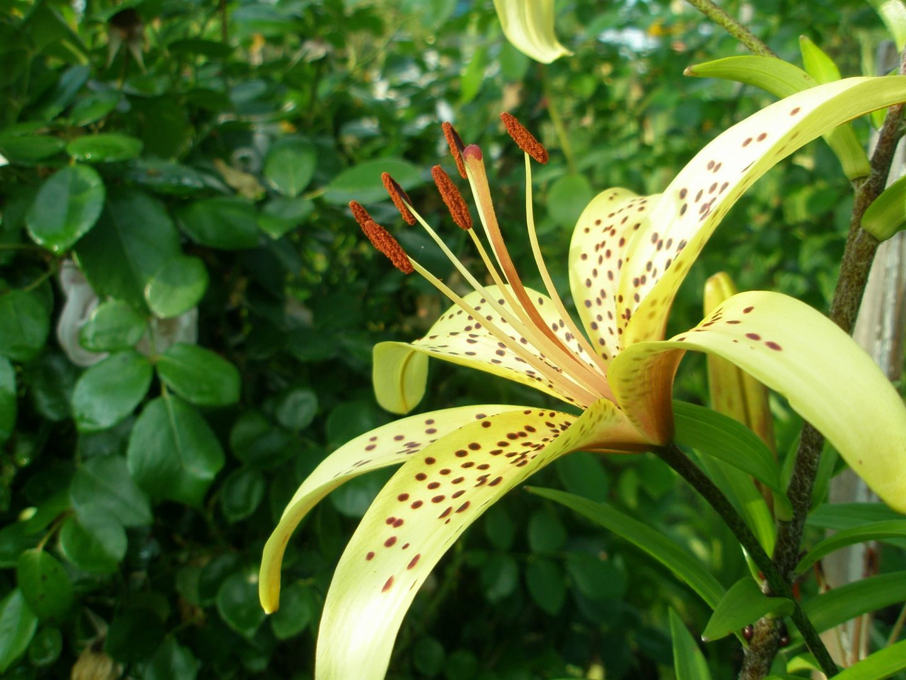

Los tipos de vegetación y flora más representativos de esta área natural mexicana son: la selva alta perennifolia, en la que encontramos caoba y cedro rojo. La selva mediana perennifolia, donde destaca el Bari de pino-encino.
